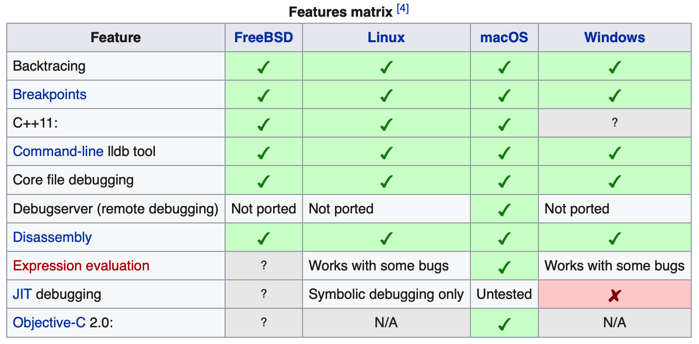
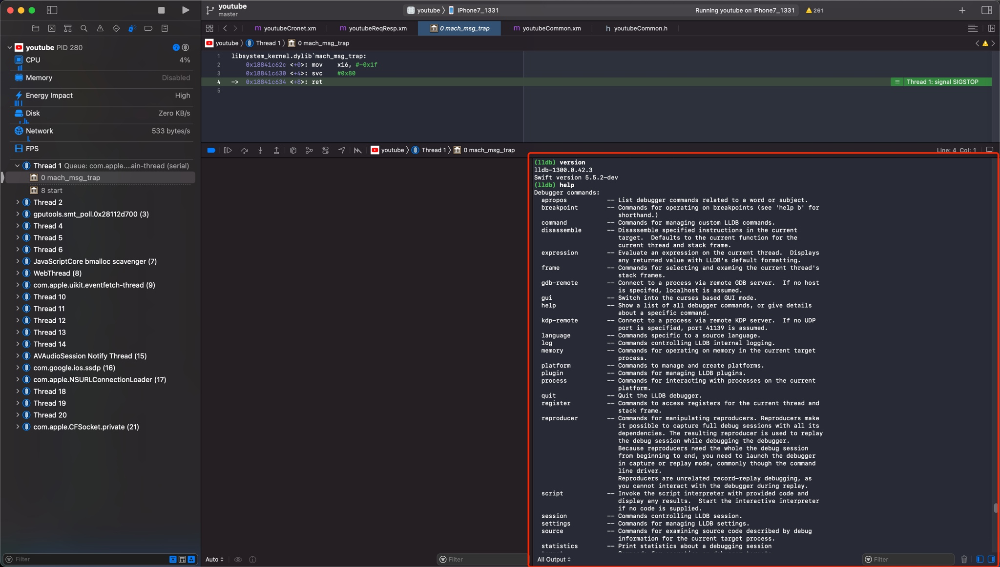

LLDB概览
TODO：
- 【已解决】XCode和lldb调试常见用法和调试心得
背景
- 主流常见
调试器=debugger - iOS端
- Apple的
Xcode的内置调试器- 之前：
GDB - 现在(
Xcode 5+)：LLDB
- 之前：
- Apple的
- Android端
- Android内置的调试器
- 之前：
GDB - 现在：
LLDB
- 之前：
- Android内置的调试器
LLDB
LLDB- 名称：常写成小写的
lldb - 是什么：一个下一代的、高性能的
开源调试器 - 说明
- 和LLVM关系
- 属于（更大的，开源的）
LLVM项目的一部分=其中一个模块- 所以LLDB也是开源的
- 常搭配
LLVM的其他模块一起使用expression parser=解释器：Clangdisassembler=反汇编器：LLVM disassembler
- 属于（更大的，开源的）
- 和Xcode关系
- 是Xcode内置的调试器：之前是GDB，现在是LLDB
- 和LLVM关系
- 特点
- 支持调试语言
- Xcode中的LLDB
- 支持调试
C、Objective-C、C++ - 支持运行平台：桌面端
macOS、移动端iOS（设备和模拟器）
- 支持调试
- Xcode中的LLDB
- 支持众多平台：
macOS、iOS、Linux、FreeBSD、NetBSD、Windows- 
- 支持
REPL、C++和Python插件- 注：
REPL=Read-Eval-Print Loop=交互式解释器
- 注：
- 支持调试语言
- 名称：常写成小写的
- 此处
- 主要使用场景
- iOS逆向时，用
LLDB调试ObjC的相关内容
- iOS逆向时，用
- 主要使用场景
LLDB的位置和版本
Mac
- Mac中的lldb
- 二进制
- Mac自带的：
/usr/bin/lldb - Xcode中的：
/Applications/Xcode.app/Contents/Developer/usr/bin/lldb
- Mac自带的：
- 集成进XCode
- 位置：内嵌在Xcode中的（一般是右下角的）调试区域的控制台
- 
- 位置：内嵌在Xcode中的（一般是右下角的）调试区域的控制台
- 二进制
Mac自带的lldb
crifan@licrifandeMacBook-Pro ~ which lldb
/usr/bin/lldb
crifan@licrifandeMacBook-Pro ~ ll /usr/bin/lldb
-rwxr-xr-x 1 root wheel 134K 1 1 2020 /usr/bin/lldb
crifan@licrifandeMacBook-Pro ~ /usr/bin/lldb --version
lldb-1300.0.42.3
Swift version 5.5.2-dev
Xcode中的lldb
crifan@licrifandeMacBook-Pro ~ ll /Applications/Xcode.app/Contents/Developer/usr/bin/lldb
-rwxr-xr-x 1 crifan staff 828K 12 15 2021 /Applications/Xcode.app/Contents/Developer/usr/bin/lldb
crifan@licrifandeMacBook-Pro ~ /Applications/Xcode.app/Contents/Developer/usr/bin/lldb --version
lldb-1300.0.42.3
Swift version 5.5.2-dev